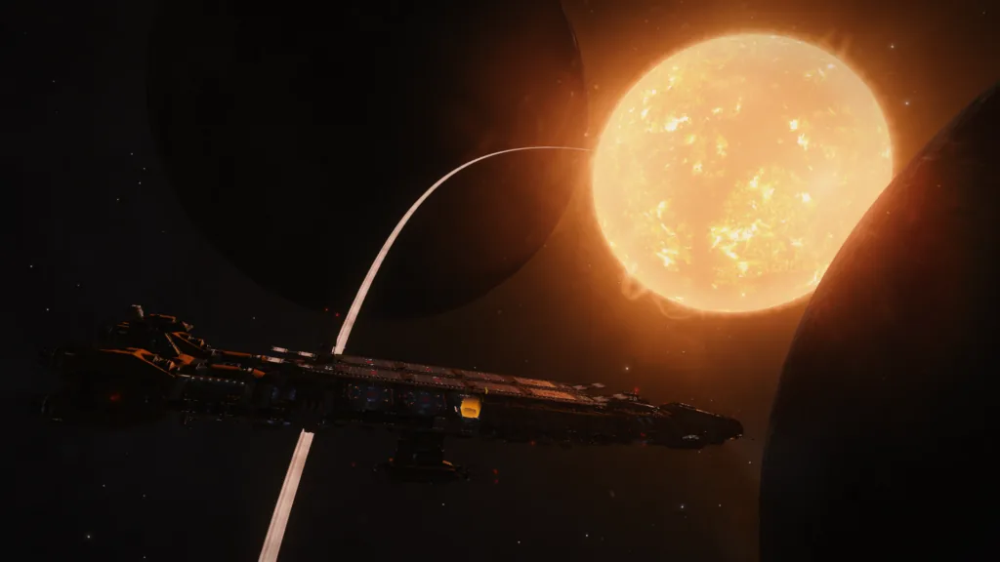

This summer on July 10th 3308, Canonn will join with other groups to search for the lost green giant as an expeditionary force for “At the Eldritch Gate” in hopes of claiming the planet in the name of Science.
7 years ago, CMDR Kelly Eldridge discovered a remarkable find that everyone is familiar with today: The rare and elusive green gas giants. Nobody had seen anything like it before, and many CMDRs wondered in awe if there would be more planets like it somewhere in the galaxy. Unfortunately, for unknown reasons, the discovery was lost to time, mostly as Kelly Eldridge died herself in the brief but deadly Cerberus Plague, which coincidentally happened right after she returned on a badly beaten ship with no comms enabled…
Canonn have selected Blaea Euhn LM-W e1-6 as our base of operations and, against my better judgement, I have agreed to allow my carrier CRV – Flower of Agatea Q1L-N1K to be used as a base camp. The Carrier will move to Blaea Euhn LM-W e1-6 by the 10th July.
The Carrier is equipped with Vista Genomics, Universal Cartographics, Refuel, Repair, Armoury, Shipyard and a fully stocked bar. Please note that there is no Pioneer Supplies or Outfitting, so you should ensure that you bring any ships and equipment pre-loaded. You can of course store more than one ship in the shipyard.

| 10th July 12:00 UTC | LAWD 26 | Launch Party at the bar. Please dress for the occasion and display your ships on the deck. There will be a mass launch involving all ships from mall participating groups. |
| 10th July | KOI 568 | We will stop here overnight to perform measurements of the bodies 7 e, 7 f and 7g to determine if any of the bodies are likely to collide in the near future. Commanders are encouraged to explore the surrounding area. |
| 11th July 09:00 UTC | KOI 568 | Departure |
| 11th July | KOI 1701 | We will arrive at the Via Gravitas a 45G planet where you will be able to test your landing skills. Please make sure you sell any data before attempting to land and you will be able to make repairs and rebuy at the fleet carrier. |
| 12th July 09:00 | KOI 1701 | Departure |
| 12th July | Drojuae RI-B e9 | We will stop here overnight to perform measurements of the bodies 5 a and 5 b in the system so as to determine if the two bodies are liable to collide in the near future. |
| 13th July 09:00 | Drojuae RI-B e9 | Departure |
| 13th July | Chraufai HR-N d6-49 | We will stop here overnight to perform measurements of the bodies A 4 and A 5 in the system so as to determine if the High metal content world and Water world are liable to collide in the near future. The orbits are quite eccentric so the chances are quite slim. |
| 14th July 09:00 | Chraufai HR-N d6-49 | Departure |
| 14th July 21:00 | Blaea Euhn LM-W e1-6 | Another party to celebrate setting up base camp. |
If you wish to travel with the carrier please ensure that you are on board by 09:00 UTC or you may be left behind. Departure and arrival times may vary.